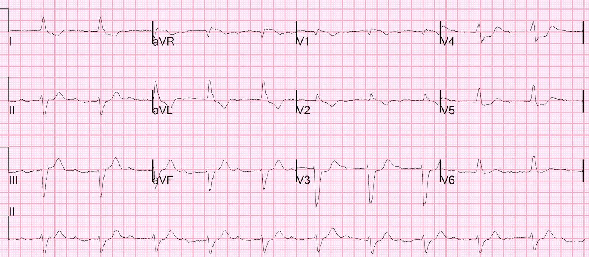
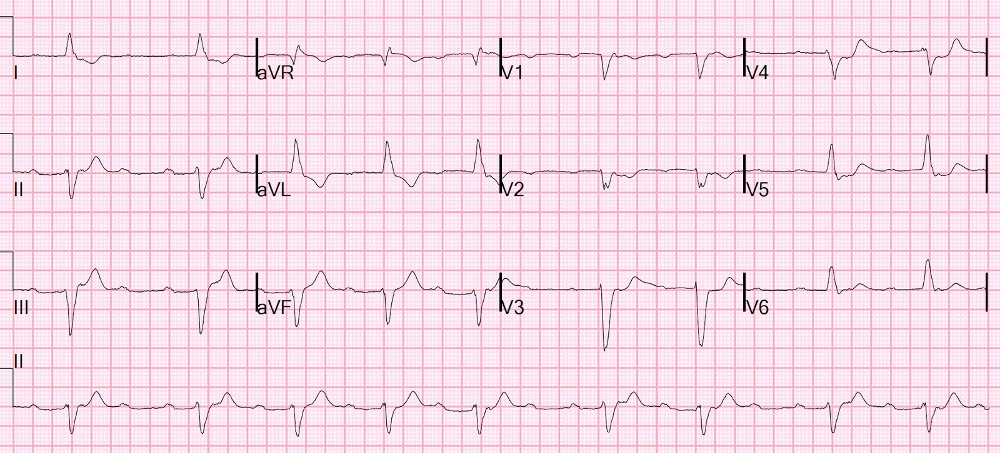
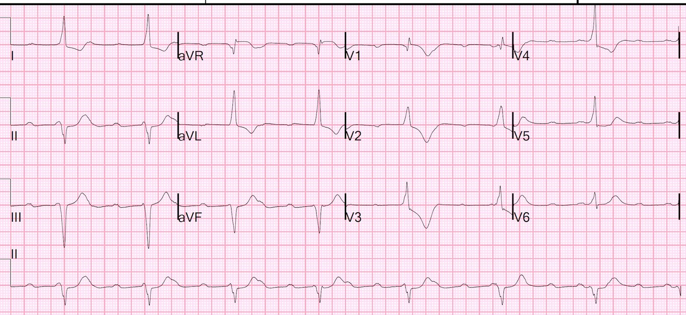
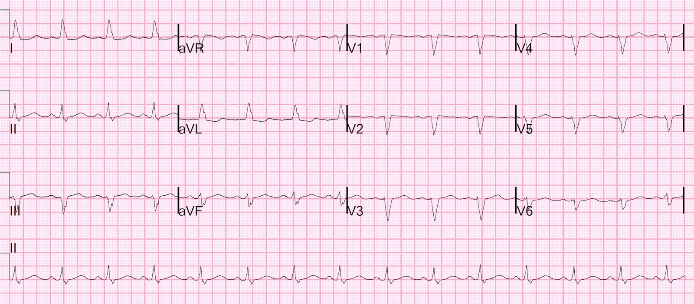
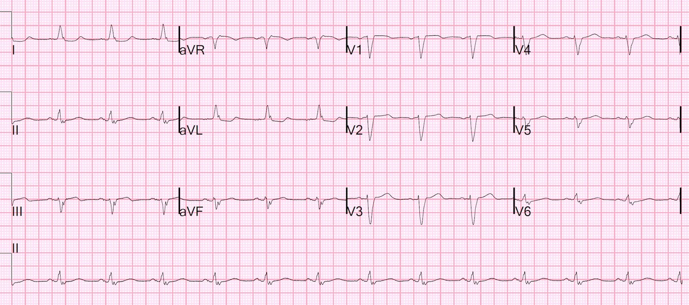
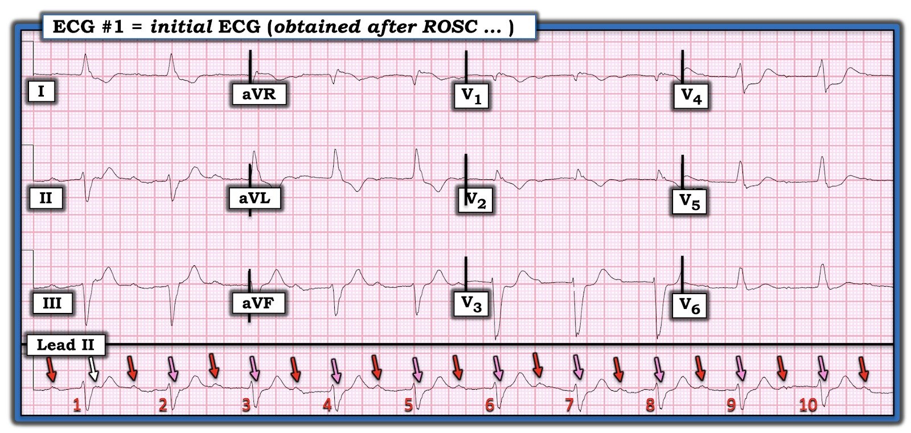
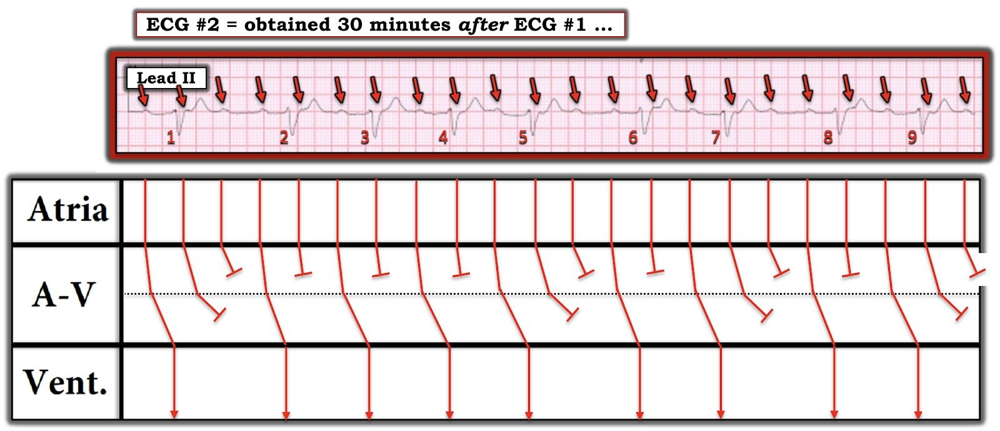
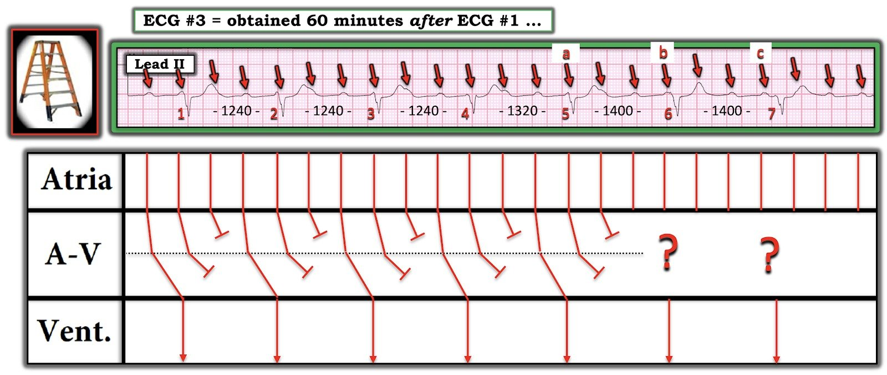

25/10/2021 — Phù phổi cấp, ngừng tim kiểu PEA, LBBB, blốc AV độ một và ST chênh xuống tối đa ở V3, V4
Bản dịch tiếng Việt của bài "Acute Pulmonary Edema, PEA Arrest, LBBB, First degree AV Block, and STD maximal in V3, V4" – Dr. Smith’s ECG Blog. Giữ nguyên toàn bộ 9 hình ảnh của bản gốc.
Một phụ nữ cao tuổi đột ngột khó thở (SOB) và người nhà đã gọi 911. Nhân viên cấp cứu ngoài viện thấy bà thở gắng sức và độ bão hòa oxy 75%. Bà được thở oxy dòng cao. Sau khi được đưa lên xe cứu thương, bà bị ngừng tim kiểu hoạt động điện vô mạch (PEA). Bà được đặt nội khí quản, thông khí và hồi sinh tim phổi (CPR) ép–kéo chủ động (compression decompression CPR) bằng ResQPod và ResQPump.
Ngoài lề: 2 thiết bị này do nhà nghiên cứu Keith Lurie, thuộc Khoa Cấp cứu (EM) tại Hennepin, phát minh; đây là phương pháp CPR duy nhất từng được chứng minh trong một thử nghiệm ngẫu nhiên là cải thiện kết cục trong ngừng tim, xem thử nghiệm ResQTrial này, công bố trên Lancet năm 2011: Treatment of out-of-hospital cardiac arrest with an impedance threshold device and active compression decompression cardiopulmonary resuscitation improves survival with good neurological outcome: results from the ResQTrial. (Điều trị ngừng tim ngoài bệnh viện bằng thiết bị ngưỡng trở kháng kết hợp hồi sinh tim phổi ép–kéo chủ động cải thiện sống còn với kết cục thần kinh tốt: kết quả từ ResQTrial)
Nhóm nghiên cứu này tại Hennepin, trong đó có cả Johanna Moore (Khoa Cấp cứu), hiện vừa nghiên cứu vừa triển khai CPR ép–kéo chủ động kết hợp thêm CPR nâng cao đầu (head up CPR), cùng một thiết bị CPR nâng cao đầu mới có tên Elegard. Xem nghiên cứu về CPR nâng cao đầu trên mô hình lợn này: Controlled sequential elevation of the head and thorax combined with active compression decompression cardiopulmonary resuscitation and an impedance threshold (Nâng tuần tự có kiểm soát đầu và lồng ngực kết hợp hồi sinh tim phổi ép–kéo chủ động và thiết bị ngưỡng trở kháng).
Đọc thêm về Elegard tại EMS world: Raises Head, Looks Around: The State of Elevated CPR (Ngẩng đầu, nhìn quanh: hiện trạng CPR nâng cao đầu)
Ca bệnh tiếp diễn
Sau 2 liều epinephrine, bệnh nhân đạt tái lập tuần hoàn tự nhiên (ROSC).
Bệnh nhân đến viện trong tình trạng đã đặt nội khí quản và phù phổi nặng.
Đây là điện tâm đồ đầu tiên:


Bạn nghĩ gì?
Bản ghi cho thấy nhịp xoang với khoảng PR rất dài (blốc AV độ một mức độ cực nặng), đồng thời có chậm dẫn truyền trong thất (IVCD) dạng giống LBBB. LBBB kèm blốc AV độ một cực nặng tương tự blốc ba phân nhánh và báo trước blốc AV hoàn toàn (độ ba). Nếu blốc AV là mới xuất hiện và do thiếu máu cục bộ, thì blốc AV gợi ý RCA là động mạch liên quan đến nhồi máu, vì RCA cấp máu cho nút AV.
Dave Richley (ECG guru) cho rằng ở đây có sóng P nằm trong các phức bộ QRS và đây là blốc độ 2. Tôi không thấy chúng, nhưng có lẽ mắt anh ấy tinh hơn tôi.
Có ST chênh xuống 1 mm ở V3; điều này thỏa tiêu chuẩn thứ 2 của Tiêu chuẩn Sgarbossa cải biên (Modified Sgarbossa Criteria, MSC), và vì vậy trong bối cảnh đau ngực sẽ là dương tính với OMI. Ở V4 ST còn chênh xuống nhiều hơn nữa; dù không thuộc MSC, dấu hiệu này thậm chí còn có giá trị chẩn đoán OMI cao hơn.
Khi ST chênh xuống (STD) tối đa ở V1-V4, gần như luôn luôn là do OMI, TRỪ KHI có nhịp nhanh, đặc biệt là rung nhĩ với đáp ứng thất nhanh (RVR). Trong ca này, không có nhịp nhanh (thật đáng ngạc nhiên). Người ta thường gặp ST chênh xuống sau ngừng tim do thiếu máu cục bộ vì mất cân bằng cung-cầu (không có OMI), nhưng trong những trường hợp đó, ta thấy kiểu ST chênh xuống của thiếu máu cục bộ dưới nội tâm mạc, tối đa ở V5 và V6, kèm ST chênh lên (STE) soi gương ở aVR.
Có một khía cạnh mâu thuẫn: OMI thường không biểu hiện dưới dạng PEA trong ngừng tim có người chứng kiến; nếu ngừng tim có người chứng kiến, thường đó là nhịp sốc được. [Trong ngừng tim KHÔNG có người chứng kiến do OMI, ngừng tim thường khởi đầu bằng rung thất, rồi do không có tưới máu (không CPR hay hồi sức), thoái hóa thành ngừng tim kiểu PEA]
Có ngoại lệ!! Khi OMI gây phù phổi nặng kèm thiếu oxy, thì tình trạng thiếu oxy có thể dẫn đến ngừng tim kiểu PEA.
Thử nghiệm COACT (có rất nhiều sai sót) và thử nghiệm TOMAHAWK gần đây hơn gợi ý rằng ngừng tim “không có ST chênh lên” không phải là chỉ định chụp mạch vành ngay lập tức. Tất nhiên điều này không áp dụng cho bệnh nhân phù phổi cấp hoặc sốc tim, và tôi tin rằng cũng không nên áp dụng cho những bệnh nhân có điện tâm đồ cho thấy OMI (MSC dương tính, hoặc các dấu hiệu khác).
Bác sĩ cấp cứu đã gọi khoa tim mạch; khoa tim mạch còn ngần ngại đưa bệnh nhân vào phòng thông tim (cath lab).
30 phút sau, một điện tâm đồ khác được ghi:


Bạn nghĩ gì?
Lúc này có blốc AV độ hai (sóng P không dẫn truyền 3 lần). ST chênh xuống ít hơn.
30 phút sau (thời điểm = 60 phút):


Lúc này có blốc AV 2:1
Sau đó, bệnh nhân được đưa đi chụp mạch vành:
Đặt máy tạo nhịp tạm thời qua tĩnh mạch thành công
Bệnh động mạch vành nhiều nhánh mức độ nặng bao gồm hẹp 90% ở
RCA đoạn giữa, hẹp nặng lỗ xuất phát và đoạn gần động mạch mũ, tắc hoàn toàn
mạn tính đoạn xa LAD, và có thể hẹp có ý nghĩa huyết động
ở đoạn xa thân chung động mạch vành trái
Trong bối cảnh blốc tim thoáng qua sau ngừng tim kiểu PEA, tổn thương hẹp RCA nặng
đã được điều trị như một yếu tố có thể góp phần
Siêu âm tim chính thức:
Rối loạn vận động thành khu trú - thành dưới
Rối loạn vận động thành khu trú - thành dưới-bên.
Troponin I đỉnh trên 10.000 ng/L, phù hợp với OMI.
Điện tâm đồ sau PCI:


Lưu ý là hoàn toàn không còn blốc AV, kể cả blốc độ một
Và 3 ngày sau:


Bệnh nhân hồi phục thần kinh hoàn toàn.
Bà được đánh giá là ứng viên không phù hợp cho phẫu thuật bắc cầu chủ vành, vì vậy sẽ được điều trị nội khoa, có hoặc không kèm can thiệp mạch vành ít xâm lấn hơn.

===================================
BÌNH LUẬN CỦA TÔI, bởi KEN GRAUER, MD (27/10/2021):
===================================
Một ca bệnh hấp dẫn (!) của Dr. Smith — may mắn là có kết thúc tốt đẹp. Để trả lời những câu hỏi mà David Richley nêu ra — tôi muốn bình luận về nhịp tim trên 3 bản ghi đầu tiên.
============================
LƯU Ý #1: Như Dr. Smith đã nêu — blốc AV của bệnh nhân này, xuất hiện sau khi hồi sức thành công — đã hết hoàn toàn khi nhịp xoang bình thường được tái lập sau PCI. Vì vậy — tôi hoàn toàn thừa nhận rằng việc tôi “đào sâu” vào nhịp tim chỉ là một bài tập mang tính học thuật. Dù vậy — vẫn có những bài học cần rút ra quan trọng về đọc rối loạn nhịp, có ý nghĩa lâm sàng cho các ca khác.
============================
Câu hỏi thứ 1 được đặt ra — là có 1 hay 2 sóng P cho mỗi phức bộ QRS trên điện tâm đồ thứ 1 của ca hôm nay (Hình 1).
- Mặc dù không thể chắc chắn về nhịp chỉ từ một điện tâm đồ duy nhất trong Hình 1 — lý do tôi ngay lập tức nghi ngờ có thể có blốc AV 2:1, là vì khoảng PR quá dài (tức là ~430 ms) đến mức nó gần như rơi vào giữa khoảng R-R. Đặc biệt trong bối cảnh lâm sàng này (tức là ngay sau ROSC) — blốc AV là thường gặp.
Cách tiếp cận của tôi như sau:
- Các mũi tên ĐỎ trong Hình 1 đánh dấu các sóng P xoang chắc chắn.
- Mũi tên TRẮNG đánh dấu một khía nhẹ (tương tự khía nhẹ thấy trong các sóng P ở mũi tên ĐỎ) — nhưng khía tinh tế này không thấy ở cùng vị trí đó trên bất kỳ phức bộ nào trong 9 phức bộ QRS còn lại.
- Dù tinh tế — có sự thay đổi nhẹ của khoảng R-R, khoảng R-R đầu tiên giữa nhát #1-2 dài hơn một chút (nghĩa là có khả năng vị trí tương đối của một sóng P ẩn trong QRS “dịch chuyển” chút ít so với phức bộ QRS — như ở mũi tên TRẮNG).
- Và — NẾU có một sóng P thừa ẩn trong phức bộ QRS — thì vị trí của nó phải nằm chính giữa một cách chính xác giữa các sóng P ở mũi tên ĐỎ. Các mũi tên HỒNG cho thấy điều này là có thể.
- LƯU Ý #2: Lúc đó tôi chưa biết chắc chắn có blốc AV 2:1 trên bản ghi thứ 1 này — vì những dấu hiệu tôi nêu trên thực sự rất tinh tế. Nhưng tôi đã nghi ngờ mạnh mẽ! — và các bản ghi sau đó đã chứng minh là tôi đúng.
- ĐIỂM THEN CHỐT (PEARL) #1: Mọi dự đoán đều vô nghĩa khi nói về nhịp tim trong bối cảnh hồi sức (hoặc sau hồi sức). “Với các nhịp trong lúc cấp cứu ngừng tim — trái tim đơn giản là không đọc sách giáo khoa”. Do đó, trong bối cảnh lâm sàng này — bạn có thể gặp bất cứ điều gì, và blốc AV là thường gặp.


Rồi đến điện tâm đồ thứ 2 — và như Dr. Smith đã nêu, lúc này rõ ràng có một dạng blốc AV độ 2 nào đó. Nhưng — Đó là loại blốc AV độ 2 nào?
- Cho rõ ràng — tôi trình bày dải nhịp chuyển đạo II dài của điện tâm đồ #2 cùng giản đồ bậc thang (laddergram) tôi đề xuất trong Hình 2. Nhưng tôi đã nghi ngờ cơ chế này ngay lập tức khi vừa nhìn thấy bản ghi.
Cách tiếp cận của tôi như sau:
- Các mũi tên ĐỎ trong Hình 2 đánh dấu các sóng P xoang. Mặc dù một số sóng P lại bị che khuất (ít nhất là một phần) bởi các phức bộ QRS — có vài chỗ ta thấy rõ 2 sóng P xoang chắc chắn liên tiếp nhau! NẾU bạn đặt compa đo (calipers) đúng bằng khoảng P-P này — bạn có thể “dò bước” ra các sóng P xoang đều hoàn hảo trên suốt bản ghi (các mũi tên ĐỎ trong Hình 2).
- ĐIỂM THEN CHỐT (PEARL) #2: Lưu ý rằng khoảng P-P của các sóng P xoang trong Hình 2 dài hơn 2 ô lớn một chút, tương ứng với tần số nhịp nhanh xoang khoảng ~130/phút. NẾU bạn quay lại Hình 1 — bạn sẽ thấy tần số của các mũi tên ĐỎ và HỒNG mà tôi vẽ hoàn toàn giống hệt (tức là 130/phút) — và vì điện tâm đồ #2 được ghi chỉ 30 phút sau điện tâm đồ #1 — điều này về cơ bản chứng minh rằng nhịp trên điện tâm đồ #1 là blốc AV 2:1!
- Quay lại với Cách tiếp cận của tôi đối với nhịp trong Hình 2. Mặc dù nhịp thất không đều — vẫn có nhịp theo nhóm (group beating)! Ý tôi là các khoảng R-R ngắn hơn — và các khoảng R-R dài hơn (tức là giữa các nhát #1-2; 5-6 và 7-8) cũng bằng nhau. ĐIỂM THEN CHỐT (PEARL) #3: Bất cứ khi nào bạn thấy nhịp theo nhóm — hãy cân nhắc mạnh mẽ khả năng có một dạng blốc Wenckebach nào đó.
- Lưu ý rằng có các khoảng PR lặp lại trên bản ghi này. Tức là — các khoảng PR trước các nhát #2, 6 và 8 bằng nhau!
- Compa đo cho biết các khoảng PR trước các nhát #3,4,5; 7 và 9 cũng đều bằng nhau — tuy hơi dài hơn các khoảng PR đứng trước các nhát #2,6,8. Việc có 2 bộ khoảng PR lặp lại cho ta biết có dẫn truyền (và đó là dẫn truyền với khoảng PR tăng dần …).
- Lưu ý rằng có thêm một sóng P không dẫn truyền giữa mỗi khoảng R-R dài hơn trong Hình 2. Đây là điều gợi ý cho tôi về dẫn truyền Wenckebach hai tầng, xảy ra ở 2 tầng bên trong nút AV (đường CHẤM CHẤM trong Tầng Nút AV của giản đồ bậc thang). Việc vẽ giản đồ bậc thang giúp tôi chứng minh giả thuyết này.


Rồi đến điện tâm đồ thứ 3. Với tôi — đây là bản ghi phức tạp nhất, vì nhịp sau hồi sức này “đơn giản là không tuân theo quy luật … “. Điện tâm đồ thứ 3 này không chỉ đơn thuần là blốc AV 2:1 (Hình 3).
- Như các mũi tên ĐỎ cho thấy — các sóng P xoang lại đều với cùng tần số nhĩ ~130/phút. Nhưng có điều gì đó đang thay đổi …
- Như tôi minh họa trong giản đồ bậc thang — tôi tin rằng 4 nhát đầu tiên thể hiện một kiểu Wenckebach hai tầng tương tự như ta đã thấy với các khoảng R-R dài hơn trong giản đồ bậc thang của Hình 2. Điều này giải thích tại sao có 3 sóng P cho mỗi QRS ở 4 nhát đầu tiên trong Hình 3. Lưu ý rằng khoảng PR giữ hằng định trước 4 phức bộ QRS đầu tiên.
- Tuy nhiên — Lưu ý rằng khoảng PR thay đổi trước các nhát #6 và 7. Điều này dễ thấy nhất nếu bạn tập trung vào các sóng P được đánh dấu “b” và “c” — chúng cho thấy rõ một mối liên hệ thay đổi với phức bộ QRS lân cận (tức là với các nhát #6 và 7).
- Lưu ý rằng khoảng R-R dài dần ra ở cuối điện tâm đồ #3 (từ 1240 ms ở đầu bản ghi — lên 1320, rồi 1400 ms ở cuối bản ghi). Tôi không biết vì sao … Có lẽ đã xuất hiện blốc AV hoàn toàn thoáng qua với các nhát thoát bộ nối? — hoặc có lẽ đơn giản chỉ là sự thay đổi khoảng PR trong quá trình dẫn truyền Wenckebach?


Kết luận: Tôi thấy loạt nhịp này thật hấp dẫn. Dù tôi không thể làm sáng tỏ cơ chế cụ thể cho bản ghi thứ 3 — những điểm lâm sàng cần nhấn mạnh là:
- Blốc AV thường gặp trong bối cảnh ngừng tim — và các loại blốc AV này “không phải lúc nào cũng tuân theo quy luật”.
- Luôn cân nhắc khả năng blốc AV 2:1 bất cứ khi nào bạn thấy PR kéo dài với sóng P luôn nằm gần giữa khoảng R-R.
- Nhận ra nhịp theo nhóm và 2 hay nhiều khoảng PR lặp lại nên gợi ý một dạng dẫn truyền Wenckebach nào đó.
- Các dạng Wenckebach AV khác nhau phát sinh kèm nhồi máu cơ tim cấp (và/hoặc ngừng tim) có thể hết khi quá trình thiếu máu cục bộ cấp được kiểm soát. Dù có vẻ là blốc AV độ 2 nặng — cuối cùng bệnh nhân này không cần đặt máy tạo nhịp.
- T.B. (P.S.) — NẾU bạn muốn tìm hiểu thêm về cách đọc và/hoặc vẽ Giản đồ bậc thang (laddergram) — BẤM VÀO ĐÂY —